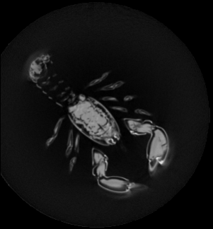

Example of 2D slice images extraction from 3D images.

Example of resulting 2D slices images of the sample/lobster.vol file.
#include <iostream>
#include <sstream>
#include "DGtal/kernel/BasicPointFunctors.h"
#include "DGtal/base/Common.h"
#include "DGtal/helpers/StdDefs.h"
#include "DGtal/io/readers/VolReader.h"
#include "DGtal/io/writers/PGMWriter.h"
#include "DGtal/images/ImageSelector.h"
#include "DGtal/images/ConstImageAdapter.h"
#include "ConfigExamples.h"
using namespace std;
{
std::string filename = examplesPath + "samples/lobster.vol";
proj(image.domain().upperBound()));
for (unsigned int i=0; i<30; i+=10){
std::stringstream name;
name << "lobsterSliceZ_" << i << ".pgm";
SliceImageAdapter sliceImageZ(image,
domain, aSliceFunctor, idV);
}
return 0;
}